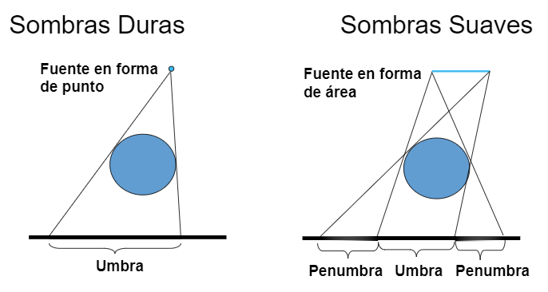
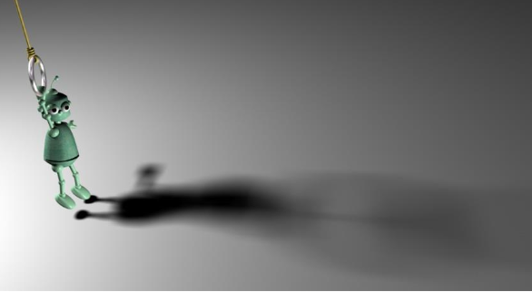
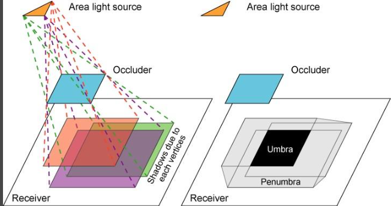
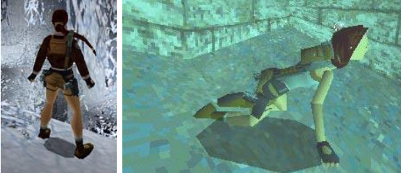

SHADOWS
Presented by Cristian Lancheros, Sebastian Camargo and Michael Rodriguez
Introduccion
Las sombras nos indican la ausencia de luz directa sobre una base por la presencia de un objeto situado entre estos dos.
Dependiendo de la distancia y las areas, algunos lugares pueden estar en completa sombra (umbra) y algunos pueden estar en media sombra (penumbra)

Si moviera la pared más lejos, la umbra no la alcanzaría y la zona donde hay penumbra se llamaría antumbra
Si modelamos la escena con una fuente de luz puntual o direccional, solamente generariamos umbra


Entonces, debido a que nuestras fuentes de luz están modeladas de esta manera, solo proyectan una sombra dura. Para un efecto más realista, hay una variedad de técnicas que intentan difuminar los bordes de la umbra para crear una ilusión de penumbra o antumbra
Sombra Suave
Sombra Suave - Antumbra
Definiciones
- Umbra: Sombra completa.
- Penumbra: Formado en el área parcialmente sombreada
- Antumbra: Es una media sombra cuya intensidad varia cuando se encuentran diferentes penumbras
- Hard shadow: Sombra con bordes duros, la umbra
- Soft shadow: Sombra con bordes suaves
Shadows in THREE.js
Por defecto usa mapas de sombras lo que significa que por cada luz que proyecta sombras, todos los objetos marcados para proyectar sombras son renderizados desde el punto de vista de la luz.
Sin embargo esta solucion no parece ser la mas optima a medida que nuestra escena crece en numero de luces y de objetos capaces proyectar sombra
Existen diferentes soluciones ademas de usa shadown mapping...
Una solución común es tener varias luces pero solo una luz direccional que genere sombras

Utilizar mapas de luz o mapas de oclusión ambiental para calcular previamente los efectos de la iluminación fuera de línea. Esto da como resultado iluminación estática

Utilizar sombras falsas.Se coloca una textura en escala de grises en el plano que se aproxime a una sombra y se dibuja sobre el suelo debajo del objeto.
